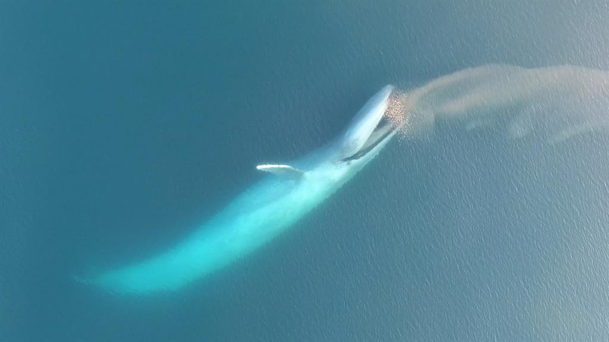

Eten is heel belangrijk. Zonder eten overleefd niemand. Ook voor het grootste dier ter wereld is eten erg belangrijk. Maar hoe zit dat bij de blauwe vinvis. Wij mensen eten veel dingen tussendoor op een dag. Een aantal dieren eten maar een paar keer per dag iets en er zijn zelfs dieren die soms een paar dagen doen met een maaltijd. Hoe zit dat met een dier van 100-170 ton. Eet hij heel vaak kleine porties of in 1 keer een grote hoeveelheid? En wat eet hij dan allemaal?
Het eten
 Je zou zeggen dat het grootste dier op aarde grote dingen eet, maar nee. Het grootste dier op aarde eet kleine kreeftjes van 10 cm, dit wordt ook wel krill genoemd, of ze eten plankton en kleine visjes. Maar ze eten echt vooral krill. Het zijn garnaalachtige beestjes (zie foto). Er zijn veel verschillende soorten krill en veel walvissen eten ze allemaal. Het maakt hun niks uit, ze vinden alles lekker. Maar de blauwe vinvis is erg kieskeurig. Hij vind maar een bepaald soort krill lekker. Krill leeft in een grote school bij elkaar. De blauwe vinvis hapt dan ook in die hele school krill en zo krijgt hij heel veel binnen. Hier in het begin van deze video zie je hoe een blauwe vinvis op een school krill afgaat. Zo zie je goed hoe ver hij zijn mond opent om zo veel mogelijk krill te eten.
Je zou zeggen dat het grootste dier op aarde grote dingen eet, maar nee. Het grootste dier op aarde eet kleine kreeftjes van 10 cm, dit wordt ook wel krill genoemd, of ze eten plankton en kleine visjes. Maar ze eten echt vooral krill. Het zijn garnaalachtige beestjes (zie foto). Er zijn veel verschillende soorten krill en veel walvissen eten ze allemaal. Het maakt hun niks uit, ze vinden alles lekker. Maar de blauwe vinvis is erg kieskeurig. Hij vind maar een bepaald soort krill lekker. Krill leeft in een grote school bij elkaar. De blauwe vinvis hapt dan ook in die hele school krill en zo krijgt hij heel veel binnen. Hier in het begin van deze video zie je hoe een blauwe vinvis op een school krill afgaat. Zo zie je goed hoe ver hij zijn mond opent om zo veel mogelijk krill te eten.
Hoeveel?
Nu nog de vraag: "Hoe kan het dat het grootste dier van de wereld krill eet van 10 cm?" Een blauwe vinvis weegt ongeveer 100-170 ton. Dan moet je dus aardig wat krill eten om dat gewicht te krijgen. Daarom eet een blauwe vinvis ook 3,5 ton per dag en soms wel 4,0 ton. Hoeveel ze eten verschilt per seizoen. In de zomer eten ze erg veel in de koude zeeën, dit wordt de foerageerperiode genoemd. In de winter gaan ze naar warmere zeeën toe. Dan leven ze op de speklaag die ze hebben opgebouwd in de zomer. In de winter worden de kalveren geboren. Als het weer zomer wordt gaan ze weer naar de koude zeeën. Op die reis gaat al het eten naar het kalf en eten de volwassen blauwe vinvissen weer als ze in de koude zeeën zijn. Hoe ze zoveel eten, daar hebben ze een techniek voor. Ze gaan namelijk 100 meter naar beneden duiken. Dan onderweg als ze weer omhoog zwemmen zetten ze hun mond open en krijgen ze al gauw 1,2 ton eten in hun mond. Maar ze vangen ook aan het oppervlak eten op als ze gewoon aan het zwemmen zijn.
Ga terug